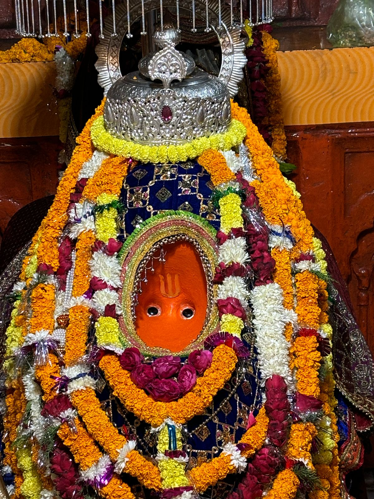
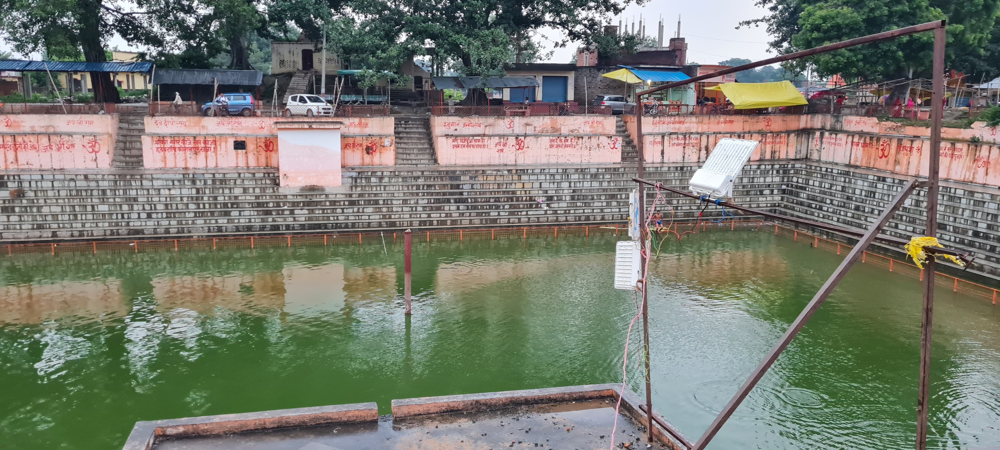
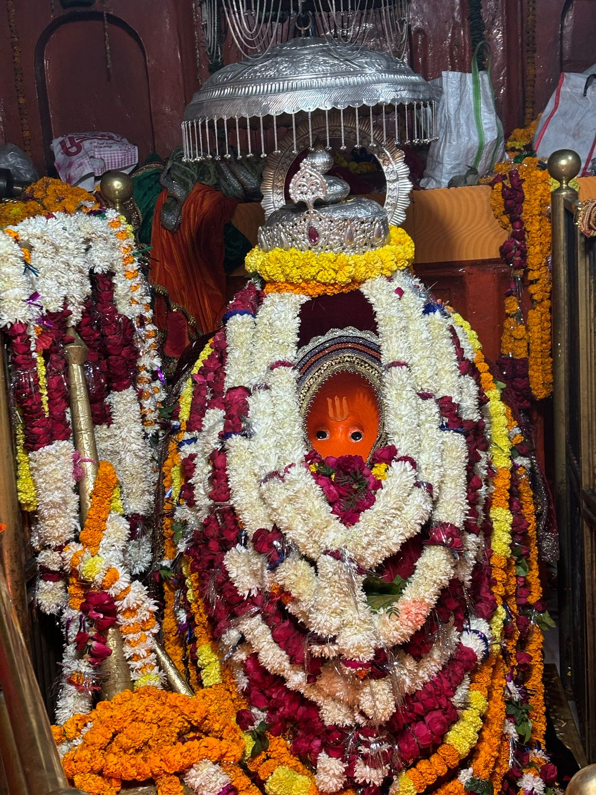
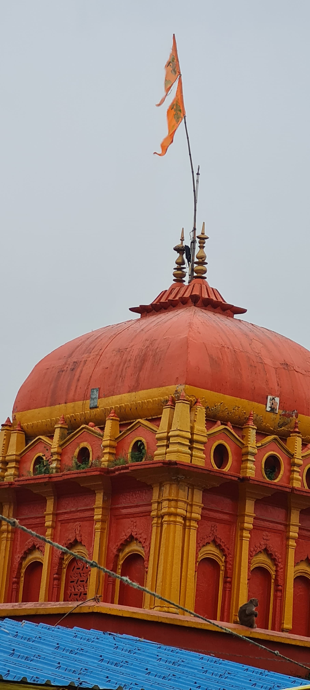

विजेथुआ महावीरन मंदिर उत्तर प्रदेश के सुलतानपुर जिले के सूरापुर क्षेत्र में स्थित एक प्राचीन और प्रसिद्ध हनुमान मंदिर है। यह मंदिर श्रद्धालुओं की आस्था का प्रमुख केंद्र है, जहाँ हर मंगलवार और शनिवार को लाखों भक्त दर्शन के लिए आते हैं। रामायण से जुड़ी पौराणिक कथाओं के अनुसार, भगवान हनुमान ने यहाँ मकर कुंड में स्नान किया था और कालनेमि दैत्य का वध किया था। इसी स्थान पर हनुमान जी ने मालिनी नामक श्रापित अप्सरा (मकड़ी) का उद्धार भी किया था। मंदिर में दक्षिण मुखी स्वयंभू हनुमान जी की मूर्ति स्थापित है, जिसका एक पैर खुदाई में मिला था, लेकिन उसका अंत नहीं मिला। मकर कुंड आज भी पवित्र माना जाता है और यहाँ स्नान करने से पापों से मुक्ति की मान्यता है। भक्त यहाँ अपनी मनोकामना पूरी करने के लिए घंटियाँ चढ़ाते हैं। मंदिर का वातावरण अत्यंत भक्तिमय और आध्यात्मिक होता है। यह मंदिर सुलतानपुर से लगभग 50 किमी दूर कादीपुर तहसील में स्थित है और सड़क मार्ग से आसानी से पहुँचा जा सकता है। यह स्थल धार्मिक, ऐतिहासिक और आध्यात्मिक दृष्टि से अत्यंत महत्वपूर्ण है।
"भक्ति, सेवा और आस्था का संगम"
विजेथुआ धाम आरती सेवा न्यास एक पवित्र और निःस्वार्थ भाव से संचालित धार्मिक ट्रस्ट है, जो श्रद्धालुओं की आस्था को सशक्त रूप देने के लिए समर्पित है। इसका उद्देश्य भक्तों को भगवान श्री विजेथुआ महराज की शरण में लाकर उनके जीवन में शांति, शक्ति और सद्भाव लाना है।
इस ट्रस्ट का संचालन श्री राहुल सिंह बजरंग जी के कुशल नेतृत्व में हो रहा है, जो धार्मिक परंपराओं और समाज सेवा—दोनों में सक्रिय भूमिका निभा रहे हैं। उनके मार्गदर्शन में यह न्यास एक आध्यात्मिक आंदोलन का स्वरूप ले चुका है।
🙏 विशेष आरती आयोजन
हर मंगलवार को श्री विजेथुआ धाम परिसर में भव्य आरती का आयोजन किया जाता है, जिसका संचालन विशेष रूप से काशी (वाराणसी) से आमंत्रित अनुभवी पंडितों द्वारा वैदिक विधि और मंत्रोच्चार के साथ संपन्न कराया जाता है।
🔹कोई भी श्रद्धालु अपनी मनोकामना की पूर्ति हेतु इस आरती का आयोजन अपने नाम से करवा सकता है।
🔹यदि कोई श्रद्धालु स्वयं उपस्थित नहीं हो पाता, तो वह अपने नाम से पूजन और आरती दूर से भी करवा सकता है।
🔹आरती कराने हेतु पूर्व सूचना देकर ट्रस्ट से संपर्क करना अनिवार्य है।
💠आरती सहयोग राशि: ₹5100
(इसमें सभी आवश्यक व्यवस्थाएँ शामिल हैं: वादक, गायक, पंडित, पूजा सामग्री, प्रसाद, साउंड सिस्टम, सहयोगी सेवाएँ इत्यादि)
🎶 भजन-कीर्तन एवं आध्यात्मिक वातावरण
आरती के समय संपूर्ण मंदिर परिसर में भजन-कीर्तन की मधुर लहरियाँ गूंजती हैं, जिससे वातावरण एक अद्भुत भक्ति-रस में डूब जाता है। स्थानीय एवं बाहर से आए श्रद्धालु मिलकर ऐसा आध्यात्मिक समागम बनाते हैं, जहाँ हर कोई ईश्वरीय उपस्थिति और मानसिक शांति का अनुभव करता है।
🎁 प्रसाद वितरण एवं सेवा भावना
आरती के पश्चात सभी श्रद्धालुओं को प्रसाद वितरित किया जाता है, जो भगवान का आशीर्वाद माना जाता है। यह परंपरा सभी को सम्मान और भक्ति की एकता का अनुभव कराती है।
ट्रस्ट यह सेवा पूर्णतः निःस्वार्थ, पारदर्शी और समर्पित भावना से करता है।
🕊 हमारा उद्देश्य
इस ट्रस्ट का उद्देश्य केवल पूजा और आरती का आयोजन भर नहीं, बल्कि समाज को भक्ति, सेवा, एकता और मानवता के सूत्र में बाँधना है।
🔸भविष्य में ट्रस्ट द्वारा:
💠 निःशुल्क भंडारे
💠सेवा शिविर
💠धार्मिक यात्राएँ
💠जरूरतमंदों की सहायता
जैसे कई सामाजिक कार्यों को भी सक्रिय रूप से संचालित करने की योजना है।
📞आरती बुकिंग व जानकारी हेतु संपर्क करें
संपर्क व्यक्ति: श्री राहुल सिंह बजरंग
📱 7394943838
📲 व्हाट्सएप: 6390001905, 9984241812
📍स्थान: श्री विजेथुआ धाम, सूरापुर, सुल्तानपुर (उत्तर प्रदेश)

हर मंगलवार को सुबह और शाम, मंदिर में एक बड़ी आरती होती है, जिसके बाद प्रसाद वितरित किया जाता है।
मंदिर से जुड़ा हर एक व्यक्ति विभिन्न सामाजिक कार्यों में अपना पूरा सहयोग देता है।
मंदिर परिसर में हर महीने एक बार निःशुल्क चिकित्सा शिविर का आयोजन किया जाता है, जिसमें विशेषज्ञ डॉक्टर गरीब और जरूरतमंद मरीजों का निःशुल्क इलाज करते हैं।
हर मंगलवार को मंदिर में जरूरतमंदों के लिए अन्नदान सेवा आयोजित की जाती है। भक्तगण मिलकर भोजन बनाते हैं और गरीबों व असहाय लोगों में वितरित करते हैं।
इस वीडियो में मंदिर में होने वाले प्रमुख कार्यों की झलक प्रस्तुत की गई है – जैसे आरती, अन्नदान, शिविर और अन्य आयोजन।
इस वीडियो में मंदिर में होने वाले प्रमुख कार्यों की झलक प्रस्तुत की गई है – जैसे आरती, अन्नदान, शिविर और अन्य आयोजन।
इस वीडियो में मंदिर में होने वाले प्रमुख कार्यों की झलक प्रस्तुत की गई है – जैसे आरती, अन्नदान, शिविर और अन्य आयोजन।
प्रत्येक मंगलवार महाआरती काशी के तर्ज पर मकरीकुण्ड पर तैयारियाँ की झलकियाँ ।
इस वीडियो में मंदिर में होने वाले प्रमुख कार्यों की झलक प्रस्तुत की गई है – जैसे आरती, अन्नदान, शिविर और अन्य आयोजन।
इस वीडियो में मंदिर में होने वाले प्रमुख कार्यों की झलक प्रस्तुत की गई है – जैसे आरती, अन्नदान, शिविर और अन्य आयोजन।
निकटतम घरेलू हवाई अड्डा इलाहाबाद हवाई अड्डा (प्रयागराज एयरपोर्ट), उत्तर प्रदेश है, जो सुलतानपुर से लगभग दो घंटे की ड्राइव पर स्थित है। यह एयर इंडिया के माध्यम से नई दिल्ली से अच्छी तरह से जुड़ा हुआ है। इसके अलावा, हाल ही में शुरू हुआ महार्षि वाल्मीकि अंतरराष्ट्रीय हवाई अड्डा, अयोध्या, सुलतानपुर से लगभग 90 किलोमीटर दूर स्थित है। यह हवाई अड्डा विशेष रूप से अयोध्या धाम आने-जाने वाले श्रद्धालुओं के लिए अत्यंत सुविधाजनक है और यहाँ से दिल्ली, अहमदाबाद, मुंबई, बेंगलुरु जैसे प्रमुख शहरों के लिए नियमित उड़ानें संचालित होती हैं। दूसरा निकटतम अंतरराष्ट्रीय हवाई अड्डा चौधरी चरण सिंह हवाई अड्डा, लखनऊ है, जो सुलतानपुर से लगभग 148 किमी दूर स्थित है। यहाँ से विभिन्न राष्ट्रीय और अंतरराष्ट्रीय गंतव्यों के लिए नियमित उड़ानें उपलब्ध हैं।
सुलतानपुर पहुंचने के कई तरीके हैं। सुलतानपुर फैजाबाद से 60 किमी, इलाहाबाद से 103 किमी, लखनऊ से 135 किमी, वाराणसी से 162 किमी, कानपुर से 231 किमी, दिल्ली से 630 किमी, भोपाल से 662 किमी और जयपुर से 743 किमी दूर स्थित है। उत्तर प्रदेश राज्य सड़क परिवहन निगम (यूपीएसआरटीसी) और कुछ निजी यात्रा सेवाएँ परिवहन सुविधाएँ प्रदान करती हैं।
इसका अपना रेलवे स्टेशन सुलतानपुर रेलवे जंक्शन नाम से है, जो उत्तर प्रदेश के सभी प्रमुख शहरों के साथ-साथ लखनऊ, कानपुर, दिल्ली, जयपुर और भोपाल जैसे अन्य राज्यों से भी अच्छी तरह से जुड़ा हुआ है। इसके अलावा, शाहगंज रेलवे स्टेशन, जो सुलतानपुर जिले के पास स्थित एक महत्वपूर्ण जंक्शन है, के माध्यम से भी बिजेथुआ महावीरन मंदिर तक पहुँचा जा सकता है। शाहगंज रेलवे मार्ग से वाराणसी, आजमगढ़, फैज़ाबाद और गोरखपुर जैसे प्रमुख शहरों के लिए सीधी ट्रेन सेवाएँ उपलब्ध हैं, जिससे श्रद्धालुओं को यात्रा में और भी सुविधा मिलती है।